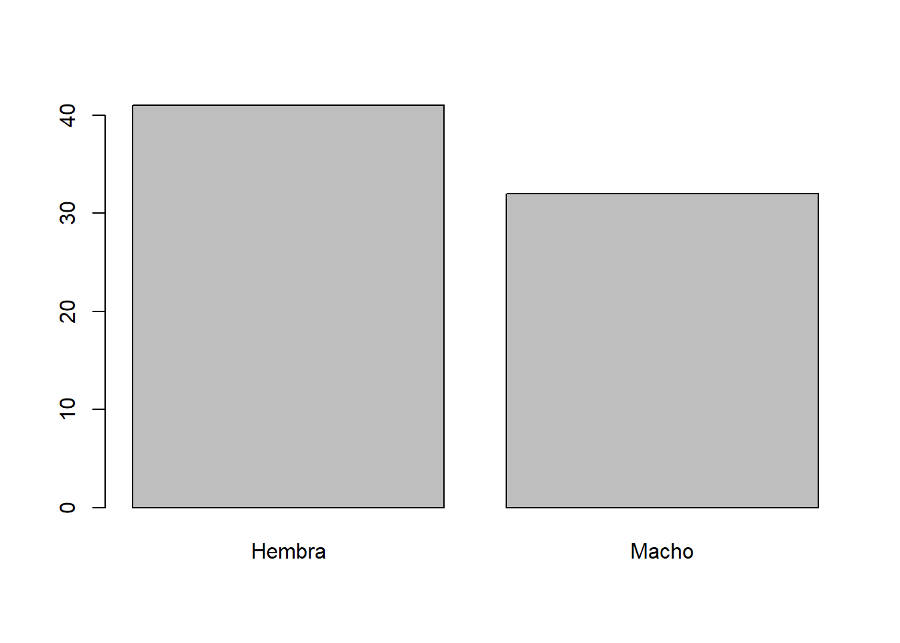

Capitulo 7 Prueba de chi-cuadrado (\(\chi^2\))
La prueba de \(\chi^2\) es una de las técnicas estadísticas más utilizadas en la evaluación de datos de conteo o frecuencias, principalmente en los análisis de tablas de contingencia (f x c) donde se resumen datos categóricos.
Existen dos tareas principales en las que podemos utilizar una prueba de Chi-cuadrado: Una prueba de bondad de ajuste (para una variable categórica) y una prueba de independencia (2 variables categóricas).
Es importante tener en cuenta que para utilizar una distribución \(\chi^2\) como una aproximación teórica de distribucion, necesitamos chequear la condición de que cada uno de los conteos esperados sea al menos 5
7.1 Prueba de bondad de ajuste
Esta variante de \(\chi^2\) permite determinar qué tan bien una muestra de datos categóricos se ajusta a una distribución teórica (\(\chi^2\)).
Para ilustrar el uso del test de (\(\chi^2\)) consideremos el siguiente ejemplo:
7.1.1 Creemos nuestros datos
Supongamos que deseamos probar el modelo de que los nacimientos masculinos y femeninos son igualmente probables para una raza particular de una especie y que una muestra aleatoria de nacimientos da como resultado 32 machos y 41 hembras.
# Datos extraidos de Mead et al. (1993). Statistical Methods in Agriculture and Experimental Biology
sexo_nacimientos <- c(rep("Macho", 32), rep("Hembra", 41))
muestra <- seq(1:73)
data_1 <- data.frame(muestra, sexo_nacimientos)## muestra sexo_nacimientos
## 1 1 Macho
## 2 2 Macho
## 3 3 Macho
## 4 4 Macho
## 5 5 Macho
## 6 6 Macho## muestra sexo_nacimientos
## 68 68 Hembra
## 69 69 Hembra
## 70 70 Hembra
## 71 71 Hembra
## 72 72 Hembra
## 73 73 Hembra7.1.2 Analicemos nuestros datos
Empecemos por ver un resumen de nuestros datos
## -- Attaching packages ----------------------------- tidyverse 1.2.1 --## v ggplot2 3.3.1 v purrr 0.3.4
## v tibble 2.1.3 v dplyr 0.8.3
## v tidyr 1.1.0 v stringr 1.4.0
## v readr 1.3.1 v forcats 0.4.0## Warning: package 'ggplot2' was built under R version 3.6.3## Warning: package 'tidyr' was built under R version 3.6.3## Warning: package 'purrr' was built under R version 3.6.3## -- Conflicts -------------------------------- tidyverse_conflicts() --
## x dplyr::filter() masks stats::filter()
## x dplyr::lag() masks stats::lag()tabla <- data_1 %>%
group_by(sexo_nacimientos) %>%
summarise(n=n()) %>%
mutate(proporcion = n/sum(n))
tabla## # A tibble: 2 x 3
## sexo_nacimientos n proporcion
## <fct> <int> <dbl>
## 1 Hembra 41 0.562
## 2 Macho 32 0.438También podemos graficar nuestros datos para tener una idea visual de nuestra muestra. Para esto podemos aplicar la función barplot() para generar un grafico con las frecuencias de las categorías de la variable. Ya que la función barplot() no muestra directamente las frecuencias de una variable categórica. Es necesario calcular previamente dichas frecuencias, para lo cual usaremos la función table()

7.1.3 Expresar la hipótesis de investigación
Para este ejemplo vamos a considerar la variable sexo_nacimientos de nuestra base de datos que creamos anteriormente (data). De estos 73 nacimientos, esperaríamos que la mitad fueran machos y la otra mitad hembras. Por lo tanto, para esto nos gustaría estudiar la siguiente hipotesis:
\[ H_0: p_{\text{Hembra}} = 0.5, p_{\text{Macho}} = 0.5\\ H_a: \text{Las proporciones son diferentes} \]
7.1.4 Calculemos \(\chi^2\) y el p-value
En R, la función chisq.test permite realizar pruebas de bondad de ajuste y de independencia de dos variables categóricas.
chisq.test(x, y = NULL)
Donde:
xEs un vector numérico o matriz.xeytambién pueden ser ambos factores.yEs un vector numérico; ignorado sixes una matriz. Siyes un factor,ydebe ser un factor de la misma longitud.
Además, es posible extraer la siguiente información a partir del modelo generado:
$statisticEl valor del estadístico de prueba de X2.$p.valueEl valor de probabilidad para la prueba.$methodUna cadena de caracteres que indica el tipo de prueba realizada.$data.nameUna cadena de caracteres que da el nombre(s) de los datos.$observedLos conteos observados.$expectedLos conteos esperados bajo la hipótesis nula.$residualsLos residuos del modelo. Se calculan como (observado - esperado) / sqrt (esperado).
Para probar si se cumple estadísticamente nuestras hipotesis usaremos la función chisq.test. Para este caso recuerden que debemos utilizar el conteo de cada categoría (Hembra y Macho).
##
## Chi-squared test for given probabilities
##
## data: tabla$n
## X-squared = 1.1096, df = 1, p-value = 0.2922Nuestra prueba estadística fue de 1.1096, con 1 grado de libertad y con un p-value de 0.29222
7.1.5 Conclusión del test
Ya que nuestro valor de probabilidad (p-value) es mayor a 0.05 no se rechaza la hipotesis nula. Por lo tanto, encontramos que los datos de nuestro modelo no proporcionan evidencia estadísticamente significativa para rechazar la hipotesis nula de que los nacimientos masculinos y femeninos son igualmente probables.
7.2 Prueba de Independencia
Esta variante de \(\chi^2\) permite determinar si el valor observado de una variable depende del valor observado de otra variable. Dicho de otro modo, se evalúa la relación entre dos variables categóricas.
Para esto consideremos los datos de siempre.
7.2.1 Cargar nuestros datos
Recuerden que necesitaremos cargar nuestros datos dataset.csv. Recuerden que podemos hacer esto a través del comando read.csv
Primero, revisemos el tipo de variables contenidas en nuestra base de datos data. Recordemos que la función str() nos permite visualizar la estructura interna de un objeto en R. Otra función de diagnostico alternativa a str() es summary().
## 'data.frame': 120 obs. of 9 variables:
## $ Cultivo : Factor w/ 1 level "Arandanos": 1 1 1 1 1 1 1 1 1 1 ...
## $ Region : Factor w/ 4 levels "BioBio","La_Araucania",..: 4 4 4 4 4 4 4 4 4 4 ...
## $ Variedad : Factor w/ 2 levels "V1","V2": 1 1 1 1 1 1 1 1 1 1 ...
## $ Hectareas : num 1030 999 1118 1007 1078 ...
## $ Temperatura : num 16.8 16.9 15 15.7 15.1 15.9 16.1 15.6 17.4 14.7 ...
## $ costo_jh : int 13059 13026 12933 13027 13045 12949 13002 12968 12978 13056 ...
## $ rendimiento : num 6866 7122 7041 6892 6928 ...
## $ Perdida_plaga: num 35.1 34.3 31.7 40.5 35.6 33 38.1 37.9 34.8 34.4 ...
## $ mano_de_obra : int 3080 2728 3120 3135 3276 2966 2725 2874 2785 3193 ...## Cultivo Region Variedad Hectareas
## Arandanos:120 BioBio :30 V1:60 Min. : 998.9
## La_Araucania:30 V2:60 1st Qu.:1477.7
## Maule :30 Median :1797.0
## Ohiggins :30 Mean :2090.7
## 3rd Qu.:2352.7
## Max. :3788.0
## Temperatura costo_jh rendimiento Perdida_plaga
## Min. :10.00 Min. :11893 Min. :4166 Min. :24.70
## 1st Qu.:12.50 1st Qu.:11997 1st Qu.:4765 1st Qu.:32.95
## Median :13.75 Median :12490 Median :5457 Median :34.60
## Mean :13.74 Mean :12500 Mean :5617 Mean :34.66
## 3rd Qu.:15.10 3rd Qu.:13002 3rd Qu.:6285 3rd Qu.:37.30
## Max. :17.40 Max. :13121 Max. :7247 Max. :42.80
## mano_de_obra
## Min. :2609
## 1st Qu.:3092
## Median :3312
## Mean :3384
## 3rd Qu.:3645
## Max. :42747.2.1.1 Agreguemos nuevas variables
Agreguemos a nuestra base de datos la medición de 2 nuevas variables derivadas de una encuesta que se les hizo a los trabajadores en cada uno de los sitios de muestreo.
A ellos se les hicieron las siguientes preguntas:
Durante los últimos seis meses ¿Usted ha aplicado algún tipo de herbicida de forma manual?
Durante el mismo periodo de tiempo ¿Usted ha experimentado algún problema de salud?
Los resultados de la encuesta fueron los siguientes:
#¿Ha aplicado algún herbicida de forma manual?
data$Uso_herbicida<-rep(c("SI","SI","SI","SI","NO","NO"),20)
# ¿Usted ha experimentado algún problema de salud?
data$Estado_salud<-rep(c("Enfermo","Enfermo","Sano"),40)Revisemos nuestra nueva base de datos
## 'data.frame': 120 obs. of 11 variables:
## $ Cultivo : Factor w/ 1 level "Arandanos": 1 1 1 1 1 1 1 1 1 1 ...
## $ Region : Factor w/ 4 levels "BioBio","La_Araucania",..: 4 4 4 4 4 4 4 4 4 4 ...
## $ Variedad : Factor w/ 2 levels "V1","V2": 1 1 1 1 1 1 1 1 1 1 ...
## $ Hectareas : num 1030 999 1118 1007 1078 ...
## $ Temperatura : num 16.8 16.9 15 15.7 15.1 15.9 16.1 15.6 17.4 14.7 ...
## $ costo_jh : int 13059 13026 12933 13027 13045 12949 13002 12968 12978 13056 ...
## $ rendimiento : num 6866 7122 7041 6892 6928 ...
## $ Perdida_plaga: num 35.1 34.3 31.7 40.5 35.6 33 38.1 37.9 34.8 34.4 ...
## $ mano_de_obra : int 3080 2728 3120 3135 3276 2966 2725 2874 2785 3193 ...
## $ Uso_herbicida: chr "SI" "SI" "SI" "SI" ...
## $ Estado_salud : chr "Enfermo" "Enfermo" "Sano" "Enfermo" ...7.2.2 Analicemos nuestros datos
Estamos interesado en el bienestar de los trabajadores y nos preguntamos si el estado de salud de los trabajadores está asociado con la manipulación de herbicidas durante la jornada laboral. Para contestar esta pregunta, el investigador decide evaluar estadísticamente la (in)dependencia entre ambas variables. ¿Cómo lo hará?
Antes de realizar cualquier prueba estadística, es de extrema importancia analizar nuestros datos. Esto nos permitirá entender y evaluar la información contenida en nuestras variables.
Empecemos por ver un resumen de nuestros datos
tabla_ind <- data %>%
group_by(Uso_herbicida,Estado_salud) %>%
summarise(n=n()) %>%
spread(Estado_salud,n)
tabla_ind## # A tibble: 2 x 3
## # Groups: Uso_herbicida [2]
## Uso_herbicida Enfermo Sano
## <chr> <int> <int>
## 1 NO 20 20
## 2 SI 60 20Otra forma de análisis es a través de un gráfico. Una forma de representar gráficamente una variable categórica es mediante el uso de barras. En R, la función barplot() nos permite visualizar la distribución o frecuencia de cada una de las categorías de una variable categórica.
Esta vez realicemos un gráfico a través de ggplot
7.2.3 Expresar la hipótesis de investigación
El siguiente paso contempla expresar la pregunta o hipótesis de investigación en al menos dos hipótesis estadísticas contrastantes: nuestra hipótesis nula \(H_0\) y nuestra hipótesis alternativa \(H_A\).
Para evaluar estadísticamente la relación entre ambas variables, podemos establecer el siguiente par de hipótesis:
\[ H_0: \text{No hay relación entre las variables Uso de Herbicida y Estado de Salud}\\ H_a: \text{Hay relación entre las variables} \]
El objetivo es testear la veracidad de la \(H_0\). Para poner a prueba la \(H_0\), es necesario realizar una prueba estadística.
7.2.4 Calculemos \(\chi^2\) y el p-value
Las diferentes pruebas de hipótesis utilizan diferentes estadísticos de prueba según la distribución de probabilidad asumida en la \(H_0\). En el caso de la prueba de independencia de \(\chi^2\) , el estadístico de la prueba se llamará estadístico de \(\chi^2\).
Calculemos el estadístico de \(\chi^2\) y el p-valor para una prueba de independencia de utilizando las variables categóricas estado de salud y uso de herbicida:
##
## Pearson's Chi-squared test with Yates' continuity correction
##
## data: data$Uso_herbicida and data$Estado_salud
## X-squared = 6.4172, df = 1, p-value = 0.0113Nuestro estadistico \(\chi^2\) es igual a 6.4172, nuestros grados de libertad son 1 y el valor de probabilidad es de 0.0113
7.2.5 Conclusion del test
Se rechaza la hipotesis nula. Por lo tanto, tenemos evidencia para sugerir que hay relación entre las variables Uso de Herbicida y Estado de Salud